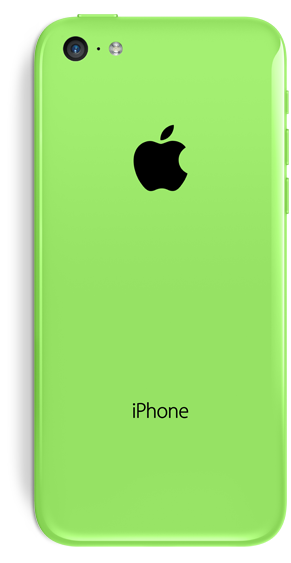
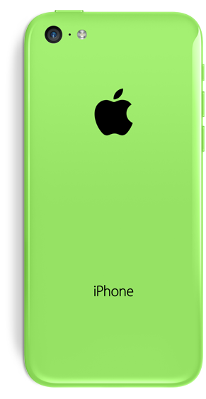

Fade in animation
section {
transition: opacity .6s;
transition-delay:.2s;
}
.loaded section {
opacity: 1;
}

section {
transition: opacity .6s;
transition-delay:.2s;
}
.loaded section {
opacity: 1;
}
#revealAnim img {
transition: transform .6s .9s;
}
.back {
transform:translate3d(-40%, 0, 0);
}
.front {
transform:translate3d(61.6%, 0, 0);
}
.side {
transform:translate3d(-338%, 0, 0);
}
.viewing-page-2 #revealAnim img {
transform: translate3d(0, 0, 0);
}
 


Reveal animation started with a 0.9s delay (after slide animation) but all animations on this slide are happening straight away.


You can select an element which you would like to overlap between two slides. Use viewing-page-X class to achieve this effect.